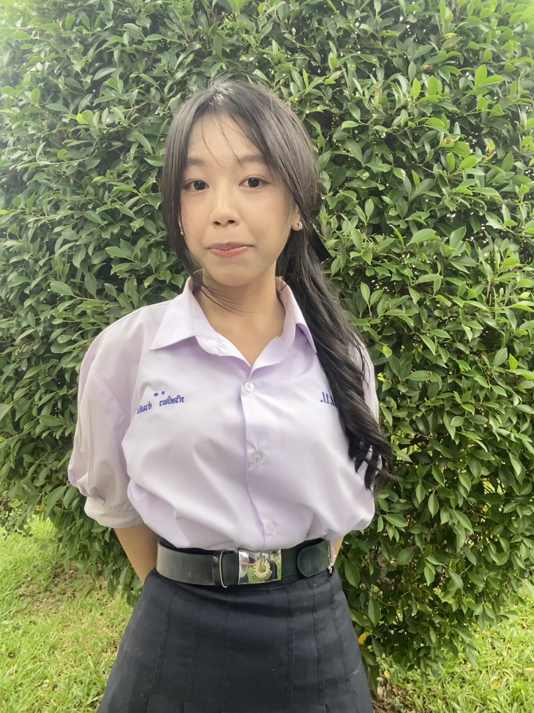

ชื่อเล่น
แป้ง
ABOUT ME 🌼
สวัสดีค่ะ ฉันชื่อภวิษย์พร อ่วมขัน กำลังศึกษาอยู่ที่โรงเรียนบ้านบึง “อุตสาหกรรมนุเคราะห์” ค่ะ

แป้ง
16 ปี
มัธยมศึกษาตอนปลาย
เตรียมวิศวะ
ปัจจุบันกำลังศึกษาอยู่ระดับมัธยมศึกษาตอนปลาย ในแผนการเรียนเตรียมวิศวกรรมศาสตร์ และกำลังเรียนรู้ทั้งด้านวิทยาศาสตร์และเทคโนโลยี
ฉันสนใจด้านวิทยาศาสตร์สุขภาพ โดยเฉพาะเรื่องการตรวจวิเคราะห์ในห้องปฏิบัติการ และมีเป้าหมายที่จะศึกษาต่อเพื่อเดินทางสู่สายงานนักเทคนิคการแพทย์
เป็นคนที่ตั้งใจกับงาน ชอบเรียนรู้สิ่งใหม่ ๆ และพยายามทำสิ่งต่าง ๆ อย่างละเอียดและรอบคอบ โดยเฉพาะงานที่ตัวเองสนใจ